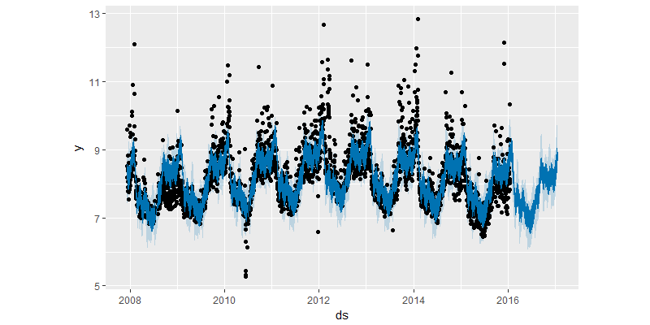
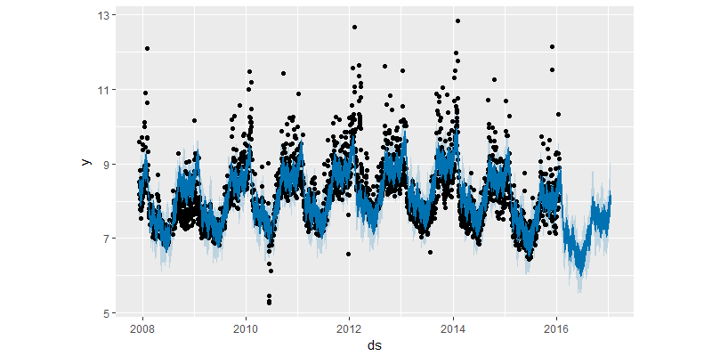

Prophet 之使用篇（三）——趋势突变点

本使用说明教程主要翻译整理自 Prophet 的官方说明文档之 “趋势突变点”
教程中使用的数据集可在 Prophet 的 github 主页 中的 examples 文件夹 内下载得到。
在之前的教程案例中，我们可以发现真实的时间序列数据往往在趋势中存在一些突变点。默认情况下， Prophet 将自动监测到这些点，并对趋势做适当地调整。不过，要是对趋势建模时发生了一些问题，例如：Prophet 不小心忽略了一个趋势速率的变化或者对历史数据趋势变化存在过拟合现象，希望对趋势的调整过程做更好地控制的话，那么下面将会介绍几种可以使用的方法。
Prophet 中的自动监测突变点
Prophet 首先是通过在大量潜在的突变点（变化速率突变）中进行识别来监测突变点的。之后对趋势变化的幅度做稀疏先验（等同于 L1 正则化）——实际上 Prophet 在建模时会存在很多变化速率突变的点，但只会尽可能少地使用它们。以 Prophet 之使用篇（一） 中佩顿 · 曼宁的数据为例，默认下， Prophet 会识别出 25 个潜在的突变点（均匀分布在在前 80% 的时间序列数据中）。下图中的竖线指出这些潜在的突变点所在的位置。

虽然存在很多变化速率可能会突变的点，但由于做了稀疏先验，绝大多数突变点并不会包含在建模过程中。如下图示，通过观察对每个突变点绘制的速率变化值图，可以发现这一点。
潜在突变点的数量可以通过设置 n_changepoints 参数来指定，但最好还是利用调整正则化过程来修正。
调整趋势的灵活性
如果趋势的变化被过度拟合（即过于灵活）或者拟合不足（即灵活性不够），可以利用输入参数 changepoint_prior_scale 来调整稀疏先验的程度。默认下，这个参数被指定为 0.05 。
增加这个值，会导致趋势拟合得更加灵活。如下代码和图所示：
|
|
|
|

减少这个值，会导致趋势拟合得灵活性降低。如下代码和图所示：
|
|
|
|

指定突变点的位置
如果你希望手动指定潜在突变点的位置而不是利用自动的突变点监测，可以使用 changepoints 参数。
代码和图如下所示：
|
|
|
|

转载请注明来自 Vector Blog